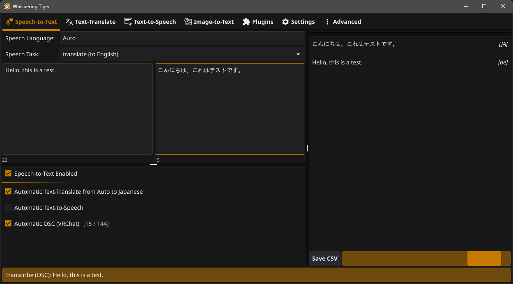

Features
Runs Locally
Run AI models on your own machine.
Use them offline after downloading.
Choose Your Hardware
CPU, NVIDIA CUDA, and AMD/Intel Vulkan with compatible runtimes. Check support.
Real-time Translation
Transcribe speech and translate it as you talk. Speed depends on the model and hardware.
Speech-to-Text
Transcribe microphone, desktop audio or files with Whisper, Qwen3-ASR and other models.
Text Translation
Translate text automatically
between up to 200 languages.
Text-to-Speech
Read text aloud. Choose preset voices, voice cloning or emotion controls, depending on the model.
Image-to-Text
Extract and translate text from images and game screens with OCR.
Plugin Support
Add subtitles, voice conversion and other tools. Install plugins directly from the app.
About Whispering Tiger
Whispering Tiger is a free, open-source desktop application for local speech-to-text, text translation, text-to-speech and OCR. It runs on Windows and Linux.
Send transcriptions or translations to the VRChat chatbox via OSC, display them in streaming overlays through WebSockets, or route generated speech into voice chat. Capture your microphone or desktop audio and save different setups as profiles.
Local models process audio and text on your machine. Optional online plugins use external services. The application is open source; models and plugins have their own licenses.
Screenshots
Download Whispering Tiger
Free for Windows and Linux (x86-64).
Extract the ZIP and start the app. It will download the backend and your selected models.
Before You Start
Can I use Whispering Tiger offline?
Yes, with local models. Download the backend, runtimes and selected model weights first. Online plugins still need an internet connection.
Does it work with AMD or Intel GPUs?
audio.cpp supports Vulkan for compatible speech-to-text and text-to-speech models on AMD, Intel and NVIDIA GPUs. Other models have their own device support. See the runtime table.
Can it translate games and VRChat?
Capture game audio or screen text, translate it, and display or read out the result. VRChat chatbox output uses OSC. Sending TTS into voice chat needs a virtual audio device or equivalent Linux routing.
See Whispering Tiger in Use
Support the Project
If you like Whispering Tiger and want to support its development, consider buying a cup of milk!
(Tigers love milk!)
Community Support
Join our community on Discord for support and discussions.
